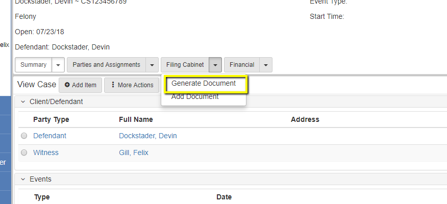
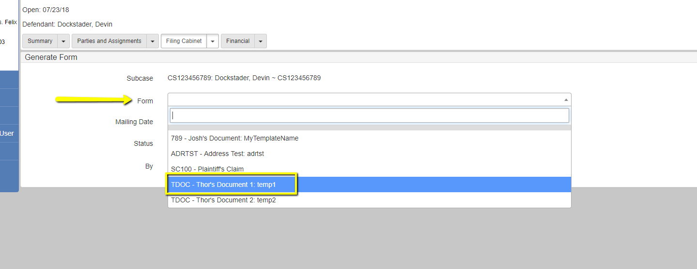
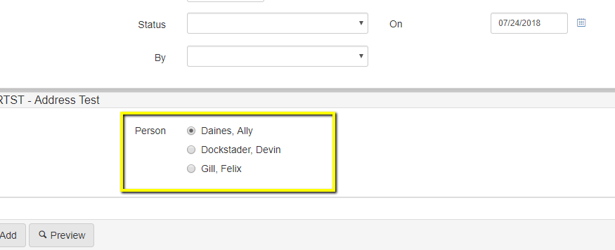
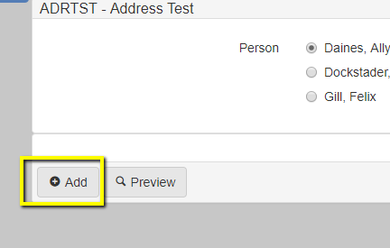
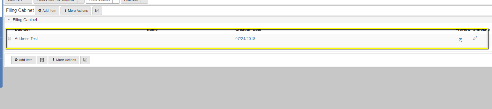

How to Generate a Document in eCourt
Through eCourt’s Document Management System (DMS) you can create template fields, and templates that can then be used to generate documents from case information. General users won’t create these templates very often, but they will generate documents using these templates sometimes on every single case. The following example of generating a document is in Calgary’s 2018 SR1-LTS Environment
Access an existing case, and hit the dropdown next to the documents tab. Then hit Generate Document/Generate Notice
Select the Document you would like to generate by hitting the selector button on the desired row
Fill out any needed information
Click the Add button to add it to the case. You can also click Preview if you want to see the document before adding it to the case
The Document should then be on the case.
